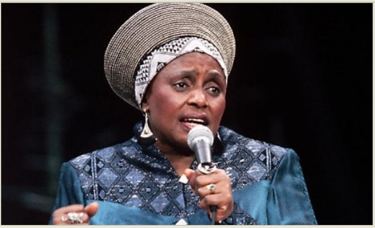

International Music Career
Makeba became internationally recognised for her music and performances.
A voice that inspired generations

Miriam Makeba was a South African singer, actress and civil rights activist who became internationally known for her music and distinctive voice.
She introduced African music to audiences around the world and became an important cultural figure whose work connected music, identity and social issues.
Miriam Makeba was born in Johannesburg, South Africa, in 1932. She began her professional music career as a member of the Manhattan Brothers before becoming a successful solo performer.
Her music career eventually took her around the world. She became known internationally for songs influenced by South African musical traditions and for introducing African sounds to audiences outside the continent.
Throughout her career, Makeba used her public platform to speak about social and cultural issues. Her contribution to music and African culture made her an influential figure internationally.
Makeba became internationally recognised for her music and performances.
She received a Grammy Award for her work on the album "An Evening with Harry Belafonte and Miriam Makeba."
Makeba helped introduce African musical traditions to international audiences.
Miriam Makeba was born in Johannesburg, South Africa.
She began gaining recognition as a professional singer in South Africa.
Makeba received international recognition through her music and performances.
She received a Grammy Award for her collaborative album with Harry Belafonte.
Miriam Makeba died in Italy after performing at a concert.
Miriam Makeba remains an important figure in African music and international popular culture. Her music continues to introduce audiences around the world to South African musical traditions.